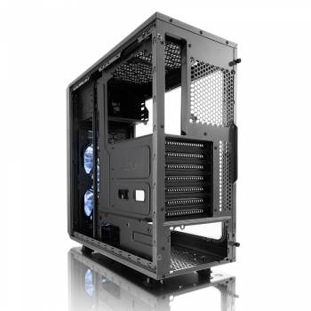
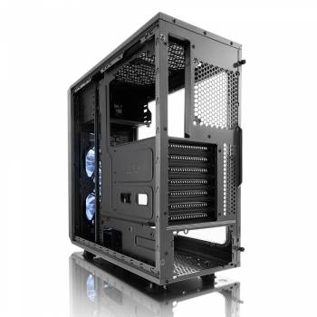

Корпус Fractal Design FOCUS G черный ATX Midi-tower
 


Описание товара
Корпус для ПК Fractal Design FOCUS G черный ATX. ATX-корпус с продуманным внутренним пространством, которое обеспечивает компактное размещение производительных компонентов.
Цена: 90$
Подробное описание товара
Корпус Fractal Design Focus G — неотъемлемая база Вашего компьютера, которая совмещает весь функционал системы в единый центр. Внутреннее пространство данной модели детально продумано, позволяя размещать необходимые элементы компактно без загромождения. Классика в черном цвете подойдет как для домашнего пользования, так и для нужд офиса.Корпус Fractal Design Focus G не только совмещает рабочие элементы, но и защищает их от перегрева, обеспечивая продолжительный срок службы. Достигается это с помощью своевременного и грамотного охлаждения. Помимо системы вентиляции с помощью кулеров и радиаторов, Вы можете по своему усмотрению организовать систему жидкостного охлаждения.
Характеристики товара
- Размещение HDD: поперечное;
- Расположение БП: нижнее;
- Количество слотов расширения: 7;
- Вес корпуса: 4.5;
- Тип корпуса: Midi-Tower;
- Материал корпуса: сталь;
- Фронтальные аудио-разъемы: Да;
- Фронтальные разъемы USB 2.0: 1;
- Отсеки 3,5″ внутренние: 2;
- Отсеки 5,25″ внешние: 2;
- Форм-фактор материнской платы: ATX;
- Максимальная длина видеокарты: 380;
- Размеры корпуса: 205×444×464мм;
- Цвет: черный;
- Наличие блока питания: Отсутствует;
- Число доп. вентиляторов 120мм: 6;
- Гарантия (мес): 12;
- Бренд: FRACTAL DESIGN;
- Фронтальные разъемы USB 3.0: 1;
- Отсеки 2,5″ внутренние: 2;
- Вентиляторы на передней панели: 2;
- Размер фронтальных вентиляторов: 120мм;
- Прозрачная боковая панель: ДА;
- Число доп. вентиляторов 140мм: 4;
Обзор корпуса Fractal Design FOCUS G на сайте www.overclockers.ua
Дополнительная информация для покупателей:
Конструкция корпуса в сборе достаточно крепкая, но если его разобрать, некоторые панели можно погнуть пальцами.
Внимание!Товар подлежит обмену и возврату, только при наличии чека!
«Все права защищены» ©.